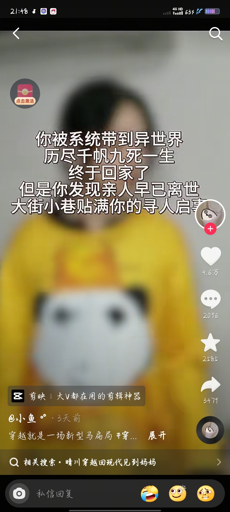

哈哈哈一直没发现问题在哪里，评论区，弹幕看了半天才发现这是汪苏泷演唱会哈哈哈哈哈哈
趁演唱会主人不在偷偷唱歌吗 哈基喆你这家伙
汪苏泷：咋回事，我成嘉宾了
汪苏泷:就不能留他一个人在台上[暗中观察]
老头怪叫几句还要回头看看汪苏泷来了没？[泪奔]
《像没彩排过一样》
汪苏泷在后台换衣服：
怕回头之后确认不在，唱：汪苏泷让我哭
其实去ktv唱了陶吉吉的歌，你就会发现，你也会想像他那样怪叫[黑脸]
你是说，只需要出一张门票钱，就可以同时看陶jj和汪苏泷的演唱会？[逞强落泪]
经常不上班偶尔上班真是爱上班啊
看见有个评论说本来开开心心拿起手机录 谁知道陶吉吉 开始乱喊乱叫 搞得他生气了啊哈哈哈哈不录了
吉吉：下去了吧，汪苏泷你让我哭！
那天的抓拍没几张是表情正常的[尬笑]
泷泷下去后，DT启动
五旬老汉大闹鸟巢？
终于当上了大经理了
胡彦斌：你这不是会唱吗
谁还能分清这是谁的演唱会
今年陶喆的票是不是更不好抢了…[委屈]
主包是汪苏泷唯粉宝宝们，大家其实可以不用关注我[猪头]，陶喆老师唱功真的很厉害，也是我偶像的偶像在鸟巢看见真的很开心，期待陶喆老师sp2来郑州[猪头]，有很多人想知道我的“近视”手机是什么品牌的[微笑]，现在统一回复我的是小米13[逞强落泪]，不要说我的手机近视了，它已经陪伴我三年了，陪伴不易宝宝们[流泪][流泪][流泪]
什么设备怎么近视[憨笑][憨笑][憨笑][憨笑]
为啥这次不跳起来唱[看]
逃了一年的大锦鲤在别人演唱会当上了[听歌][听歌][听歌]
不是哥们，在抖音这种画质挺稀缺的[看]
老头给我开鸟巢[微笑] 这样我就能抢到票了[微笑]
人家球雅结个婚 你隔这又唱又跳的[看]
怪不得这小子以前叫情歌王子呢[憨笑]
不是，这首也是他的啊[宕机]
张信哲 你的权威我后知后觉
等会儿，等我坐起来，躺着听多少有点不吉利
我今天生日，刷到这个，是想送走我吗[捂脸][捂脸][捂脸]
继《菊次郎没熬过的夏天》和《致爱丽丝的头七》和《卡农出殡》以后终于发行了《头七回魂快乐》填补了殡葬行业没有外国音乐的空缺！
躺好了[宕机]
生日赶上清明了，怎么破[泣不成声]
凌晨一点半🕜，我在丰台火车站刷到的[泪奔]
我觉得博主最厉害的一点就是，不管什么剧情色情，惊悚，猎奇，恶心都波澜不惊的叙述，让我看的时候就很专注于博主叙述的故事本身，不会一惊一乍的，也不会莫名其妙开个奇怪的玩笑，就挺出戏的。
不行，，，，这期的精神攻击太强了，，，我要去看哈利波特缓缓…………
还是日恐有感觉 一个人大中午看都能起鸡皮疙瘩
《这个，这个好贵》《到手感觉挺沉的》《这钱花的值了》[泪奔][泪奔][泪奔]
买相机之前:缺个相机 买相机之后:啥都缺[吐舌]
哥 你怎么说话小心翼翼的 是被打哭了吗
买了这么多一次没拍过嘿嘿嘿的时候我笑了 还以为刷到攻略了[黑脸]
泽泽又捉老汉了，朋友圈卖10w[捂脸]
有一次，他一直往上飞，直到突破大气层，才看到了一个令他绝望的真相，原来穿越者从未离开故乡
所以周明瑞得知自己所谓的穿越真相时，得多绝望[微笑]
这就是为什么现在穿越主角基本都是没有双亲的设定，如果有双亲基本就是盗天魔尊那样的了[捂脸]
我稍微晚点回家我爸妈都会担心 给我打电话，不敢想真的突然消失去了异世界几十年我爸妈会有多痛苦[流泪]
让我想到这个 
看过和你这个差不多的，也是被系统拐去异界，系统还挺费的，主角硬是靠着回家见奶奶的执念，一步一步成圣，结局系统想炼化主角为本源，被将一军，给奴隶了，搜魂发现根本回不去，穿越都是随机的，直接疯了，献祭整个世界寻求回去的一点机会，一句我只想回家，给小小的老子迷的[思考][思考][思考]
易小川回到古代又是泡妞又是当官的，怎么会理解高要无端被穿越到古代，被人欺负，被人阉割成太监的感受，人家害了天下人也没害你，你却一而再的伤害他，换我不能助纣为虐起码也去不会阻止他
盗天魔尊：我以为成尊就能找到空门回家了，但是空门在哪里[流泪]
盗天魔尊本来一个王牌机甲驾驶员，数理化天才，至少是个省级状元，家庭美满，父慈子孝，国家铁饭碗，战斗英雄，三观标尺，但却要穿越到靠养虫子修仙的世界和别人勾心斗角，见证一次次的人间惨剧还要被个魂殿版药老附身当护道人，好不容易天下无敌知过去探未来，追了一辈子连家都回不去[看][看][看]
大表哥，我就想问下，酒店里是不是就你们两位客人[捂脸]
“达Q拉”[捂脸]好久没听过这个名字了[赞]
大表哥最真实，以一己之力干翻国外所有文旅局[赞][赞]
甲亢哥一到中国，国外网友天塌了，大表哥一到外国，外国文旅天塌了
枯藤 老树 昏鸦 ，锯子 面包 和他
甲亢哥让世界人民了解中国，大表哥让中国人民了解世界[赞][赞][赞][赞][赞][赞][赞]
大表哥能不能去一下莫奈花园，是不是真的美得像仙境
看见这张照片憋不住笑了[捂脸]
总共就1.8公顷葡萄园，酒卖的全世界都是滴，有多少大冤种喝了假酒[捂脸][捂脸][捂脸][捂脸]
哈哈 看完小红书上的[笑哭][笑哭][笑哭]勃艮第都在怀疑自己
难怪那些出国的说国外生活安静，这能不安静吗[看]
Read more: